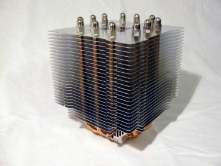
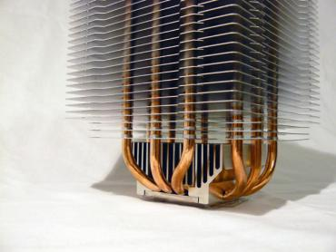
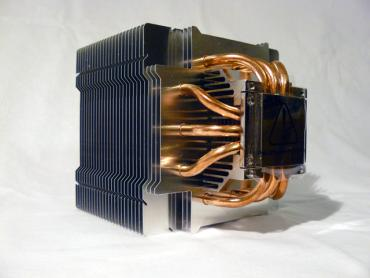
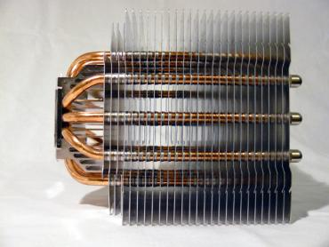
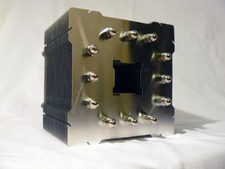
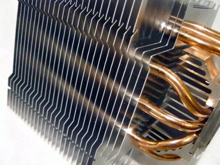
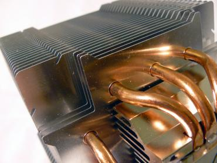
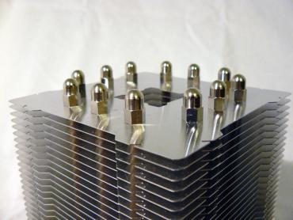
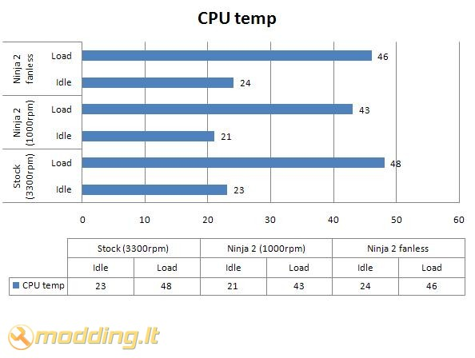

Scythe NINJA 2
Įsigydami galingą CPU turime pasirūpinti pakankamu jo aušinimu. Aušinimo efektyvumą nulemia keli aušintuvo parametrai: ventiliatoriaus dydis, jo apsukų skaičius, radiatoriaus plotas bei jo išsidėstymas. Didelių matmenų ventiliatorius, sukdamasis aukštomis apsukomis, gali kelti didelį triukšmą. Ar įmanoma jo atsikratyti? Taip, jei naudojamas Fanless tipo aušintuvas. Vienas populiariausių šiuo metu tokio tipo aušintuvų yra Scythe NINJA 2.
Žvilgsnis iš arčiau
Kompanija Scythe garsėja savo auštos kokybės bei našumo aušintuvais, pagamintais naudojant heatpipe šiluminius vamzdelius. Scythe NINJA 2 aušintuvas yra patobulintas Scythe NINJA aušintuvo modelis, kuris, pasak gamintojų, dabar savo efektyvumu lenkia savo pirmtaką 5% fanless rėžime bei 15% naudojant ventiliatorių.
Pamatęs aušintuvo pakuotę buvau nustebintas jos dideliu dydžiu. Pažvelgus į ją visų pirma žvilgsnis krenta į įmantriomis raidėmis užrašytą aušintuvo pavadinimą NINJA 2.Taipogi nurodyta galimybė aušintuvą naudoti pasyviu rėžimu, nenaudojant ventiliatoriaus - Supports fanless mode, bei galimybė naudoti Quad Core procesoriams aušinti. Kitoje pakuotės pusėje japonų bei anglų kalbomis užrašytos garantinės salygos bei gamintojo duomenys. Pakuotės šonuose pavaizduoti skirtingi tvirtinimai priklausomai nuo socket tipo, trumpai aprašomas komplektacijoje esantis ventiliatorius bei pateikiami pagrindiniai aušintuvo parametrai, tokie kaip dydis, ventiliatoriaus skleidžiamų dB lygis, oro srautas ir kt.
Pakuotės viduje randame:- aušintuvą
- 120mm ventiliatorių
- tvirtinimo detalės skirtingiems socket
- 4 varžtus
- termopastą
- rėmelius aušintuvui pritvirtinti
- manual - vartotojo knygelę
Scythe NINJA 2 aušintuvas pagamintas panaudojant 6 heatpipe šiluminius vamzdelius. Aušintuvas iš visų pusių atrodo beveik vienodai. Vamzdeliai išdėstyti nuo apačios iki pat viršaus, pereidami pro 26 aliuminio plokšteles. Apačioje vamzdeliai išeina iš didelio aliumininio radiatoriaus, o aušintuvo viduryje yra tuštuma, kuri eina pro aliuminio plokšteles. Viršuje, ant Heatpipe vamzdelių, uždėti metaliniai apsauginiai gaubtai.
       
Specifikacijos
- Suderinamumas: socket 478, LGA775, 754, 939, 940, AM2, AM2+
- Išmatavimai: bendri 116(ilgis) x 116(plotis) x 152(aukštis) mm
- Išmatavimai: aušintuvo 120(ilgis) x 120(plotis) x 25(aukštis) mm
- Ventiliatoriaus apsisukimai: 1000rpm (±10%)
- Ventiliatoriaus triukšmo lygis: 20.50dBA
- Oro srautas: 52.90CFM
- Ventiliatoriaus guolis: Sleeve Bearing
- Svoris: 705g (Fanless) 820g (su ventiliatoriumi)
Aušinimo savybėms pagerinti Scythe NINJA 2 aušintuvas gali būti naudojamas su ventiliatoriumi (iais). Teoriškai gali būti sumontuota iki 4 ventiliatorių. Montuojamas 120mm ventiliatorius, kuris tvirtinamas komplektacijoje esančių, specialių tvirtinimo rėmelių pagalba. Rėmeliai tvirtinami prie ventiliatoriaus, o tuomet įstatomi į griovelius, esančius aušintuvo aliuminio plokštelių kraštuose. Ventiliatoriaus padėtis gali būti šiek tiek reguliuojama slamkiojant rėmelį. Ventiliatorius sukasi 1000rpm greičiu ir yra beveik negirdimas.
Tvirtinimas
Aušintuvą montavau AM2 socket'ui. Visų pirma nuo aušintuvo nuimame apsauginę plėvelę. Prie aušintuvo pagrindo prisukame tvirtinimo plokštelę. Užtepame termopastą bei montuojame aušintuvą. Montavimui nereikalingi jokie papildomi įrankiai, be to - nereikia išiminėti motininės plokštės, kadangi nenaudojama papildoma sustiprinanti plokštelė (kaip pvz. Zalman aušintuvų montavimui). Montuojant šį aušintuvą patarčiau išmontuoti PSU bei GPU, kadangi gali būti sunkiai prieinama dėl ribotos erdvės aplink aušintuvo tvirtinimo auseles.
Rezultatai
Testavimo sistema:
- Mainboard - Asus M2N-E nForce570 Ultra
- CPU - AMD ATHLON 64 X2 Dual-Core 5000+ AM2 (65W) BOX
- RAM - Corsair DDR2 KIT 2X1G 675MHZ TWIN2X2048-5400C4
- HDD - SEA BARRACUDA 7200.10 250GB SATAII 16MB ST3250410AS
- Video - inno3D GF8800GT 512MB GDDR3 RAMDAC 400MHZ Core 600MHz Memory 1800MHz
- PSU - Codegen 450W
Procesorius testuojamas Idle ir Load rėžimais. Load rėžimui naudojama Orthos programa. Testuojami Stock bei Scythe NINJA 2 aušintuvai. Stock aušintuvas sukasi maksimaliais 3300rpm apsisukimais , Scythe NINJA 2 sukasi 1000rpm greičiu. Fanless rėžime aušintuvas Scythe NINJA 2 naudojamas be ventiliatoriaus. Korpuso galinėje sienelėje įmontuotas ištraukiantis 120mm ventiliatorius, besisukantis maksimaliais apsisukimais nuo 12V.

Rezultatai tikrai puikūs: Scythe NINJA 2 aušintuvas, besisukdamas daugiau nei tris kartus lėčiau nei stock aušintuvas, 2 laipsniais Idle bei 5 laipsniais Load rėžime, rodo geresnius aušinimo rezultatus. Fanless rėžime NINJA 2 aušintuvas taipogi lenkia gamyklinį stock aušintuvą 2 laipsniais Load rėžime.
Išvados
Pliusai:
- begarsis naudojant Fanless rėžime - 0 dB !
- tylus naudojant 120mm ventiliatorių
- puikūs aušinimo rezultatai
- kokybiškai surinktas
Minusai:
- nėra apsukų reguliatoriaus
 Puikūs
Scythe NINJA 2 aušinimo rezultatai ir galimybė naudoti be ventiliatoriaus Fanless rėžime leidžia šį aušintuvą pavadinti tobulu. Galimybė aušinti CPU begarsiame rėžime turėtų ypač sudominti HTPC vartotojus. Naudojant 120mm ventiliatorių Scythe NINJA 2 ataušins ir labiau kaistančius, spartesnius Quad Core procesorius. Ieškantiems gero ir efektyvaus aušintuvo rekomenduoji rinktis šį gaminį.
Puikūs
Scythe NINJA 2 aušinimo rezultatai ir galimybė naudoti be ventiliatoriaus Fanless rėžime leidžia šį aušintuvą pavadinti tobulu. Galimybė aušinti CPU begarsiame rėžime turėtų ypač sudominti HTPC vartotojus. Naudojant 120mm ventiliatorių Scythe NINJA 2 ataušins ir labiau kaistančius, spartesnius Quad Core procesorius. Ieškantiems gero ir efektyvaus aušintuvo rekomenduoji rinktis šį gaminį.
Nuo šiol šį puikų aušintuvą galite įsigyti Lietuvoje, UAB „Silent PC“ e-parduotuvėje.
Tik nepamirškite prisistatyti, kad esate Modding.lt lankytojas, ir tuomet Jums bus pritaikyta speciali nuolaida.
Jei norėsite pakomentuoti mano straipsnį arba pareikšti savo nuomonę, apsilankykite Modding.lt forume.


{kind=link}
{kind=link}
{kind=link}
{kind=link}
{kind=link}
{kind=link}
{kind=link}
{kind=link}
{kind=link}
{kind=link}
{kind=link}
{kind=link}
{kind=link}
{kind=link}
{kind=link}
{kind=link}
{kind=link}
{kind=link}
{kind=link}
{kind=link}